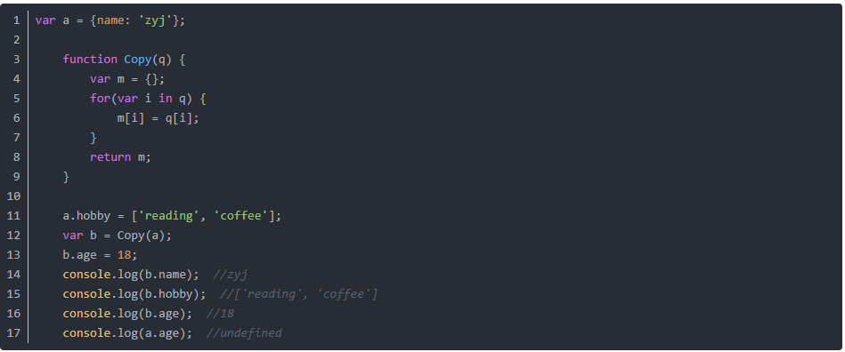
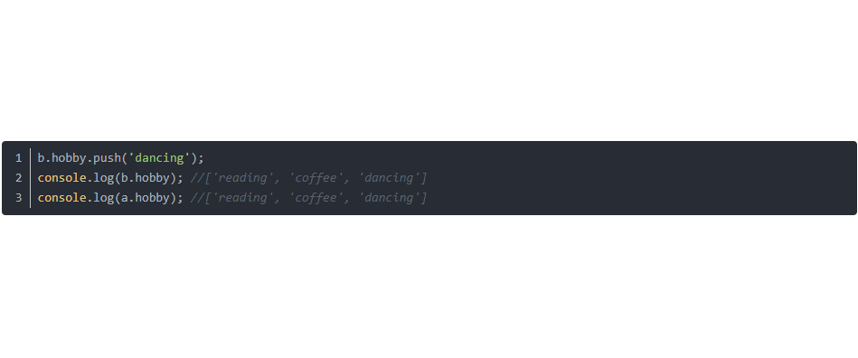
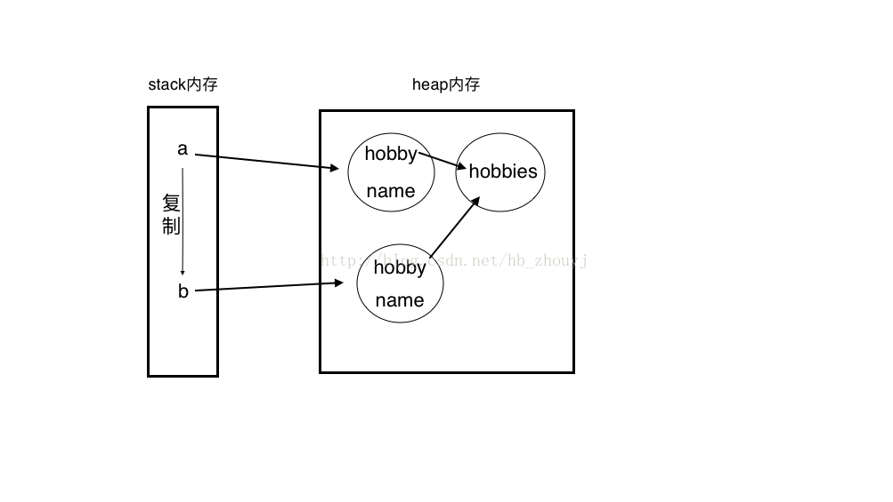
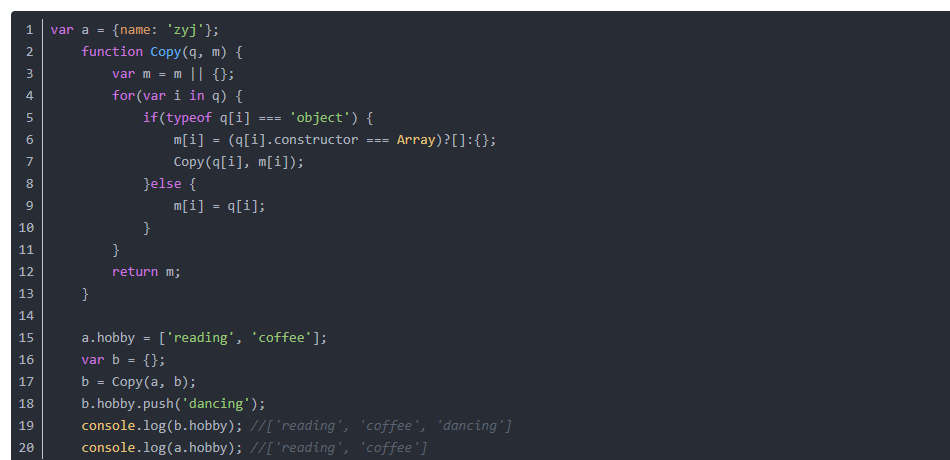

js中基本数据类型和引用数据类型
基本类型：存放在栈内存中的简单数据段，数据大小确定，内存空间大小可以分配。
Undefined / Null / Boolean / Number / String，它们是直接按值存放的，可以直接访问。
引用类型：存放在堆内存中的对象；每个空间大小不一样，根据情况进行特定的分配。
当我们需要访问引用数据类型 (对象 / 数组 / 函数) 的值时，首先从栈中获得该对象的地址指针，然后再从堆内存中取得所需的数据。
所以，现在就可以解释 var a = function(){}; var b = function(){}; a==b 为false了。
变量a实际保存的是指向堆内存中对象的一个指针，而b保存的是指向堆内存中另一个对象的一个指针；虽然这两个对象的值是一样的，但它们是独立的2个对象，占了2份内存空间；所以 a==b 为 false。
如果 var a = {}; var b = a; 这时变量b复制了变量a保存的指针，它们都指向堆内存中同一个对象；所以 a==b 为 true。
传值与传址
基本类型与引用类型最大的区别实际就是 传值与传址的区别。
这就是传值与传址的区别。因为a是数组，属于引用类型，所以a给b传的是栈中的地址，而不是堆内存中的对象。而c仅仅是从a堆内存中获取的一个数值，
并保存在栈中。所以b修改的时候，会根据地址回到a堆内存中修改；c则直接在栈中修改，并且不能指向a堆内存中。
讲到栈和堆，不得不提浅拷贝和深拷贝。
浅拷贝
当我们使用对象拷贝时，如果属性是对象或数组时，这时我们传递的只是一个地址。因此子对象在访问该属性时，会根据地址回溯到父对象指向的堆内存中，即父子对象发生了关联，两者的属性值会指向同一内存空间。

a对象中的name属性值为字符串，hobby为数组。a拷贝到b，两个属性均能顺利拷贝。 给b对象新增一个number类型的属性age时，b能够正常修改，而a中无定义。说明 子对象 b 的 age 并没有关联到 父对象 a 中，所以为undefined。
但是，若修改的属性为对象或数组时，那么父子对象之间就会发生关联。其在内存的状态，见下图。
原因是 age的值属于基本类型，所以拷贝的时候传递的是该数据值；但hobby的值是堆内存中的对象，所以hobby在拷贝的时候传递的是指向hobby对象的地址，无论复制多少hobby，其值始终是指向父对象的hobby对象的内存空间。
深拷贝
在实际编码中，我们不希望父子对象之间产生关联，这时就用到深拷贝。既然属性值类型是数组或对象时只会传址，那么就可以用递归来解决这个问题，把父对象中所有属于对象的属性类型遍历赋给子对象即可。代码如下：
修改b子对象的hobby数组时，没有使a父对象中的hobby数组新增一个值，即子对象没有影响到父对象a中的hobby，存储模式如下：
---------------------